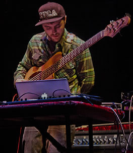

Artists
Evantr0nic
Evantr0nic, but friends know him as Evan Straley is a talented bass player. His style of music combines his ability to play Bass with some mixing to create great sets. His Bass is a part of his live act. He also produces some Phsy-Chill tracks and favors using unique vocals over his productions. Check out his music as his use of vocals is far from the ordinary.
Anitek
Anitek is an absolute maniac on the 1200's. With a passion for scratching he plays on Vinyl timecoded through Serato. He is currently travelling through Europe and play in lounges and nightclubs in countries such as France and Switzerland. He, as all of our artists do, believes in the music. All of his productions and performances are accessible for free. So listen and enjoy the music with no-hassle and no-terms or conditions. Just triphop, instrumentals and hip-hop all day long.
Whiteboy
This is our most energetic of our artists. Whiteboy is a DJ who often accompanies local New Jersey wrapper Mic Familiar. Whiteboy is also a collaborator in the group Dubbudz who perform live music with a DJ set play style.